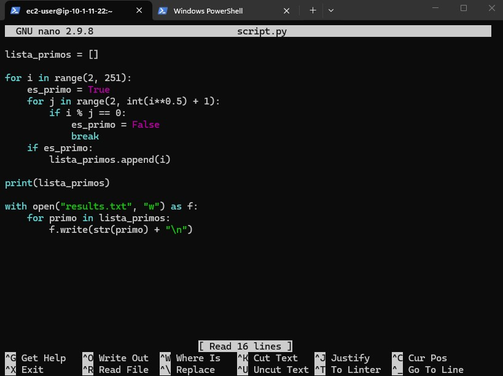
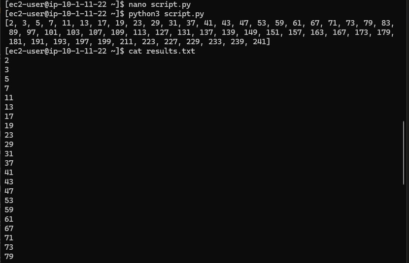

SSH and Setup
Connected to the Linux Host and prepared the terminal session for editing and testing a Python file.
This challenge lab uses a Linux Host to create and test a small Python script. The goal is to calculate the prime numbers from 1 to 250, print them on screen, and save the same result into a text file for verification.
Connected to the Linux Host with PuTTY following the standard process from Lab 225, wrote a Python script in script.py to calculate prime numbers, executed it with python3, and confirmed that the same values were written into results.txt.
Connected to the Linux Host and prepared the terminal session for editing and testing a Python file.
Created a loop that checks divisibility and stores every prime number found between 1 and 250.
Ran the script and then opened results.txt to verify that the file contained the expected output.
The lab was short, but it covered the full scripting cycle: write, execute, and verify.
nano script.py and wrote a Python program that iterates from 2 to 250, tests each number for divisibility, and stores the prime values in a list.open("results.txt", "w") so the same prime numbers were saved line by line into a text file.
results.txt.python3 script.py to print the prime numbers on screen.cat results.txt to verify that the text file contained the same values generated by the script.
results.txt.Main commands and Python instructions used during the exercise.
nano script.pyCreates or opens the Python file in the nano editor.
python3 script.pyRuns the script with Python 3 and prints the prime numbers.
cat results.txtDisplays the contents of the output file to verify the saved results.
for i in range(2, 251)Iterates through the number range used in the exercise.
open("results.txt", "w")Creates or overwrites the text file where the final output is stored.
python3 explicitly avoids confusion on systems where both Python 2 and Python 3 are installed.cat results.txt confirms that the file output matches the terminal output.This lab worked as a compact scripting exercise. Even though the problem was simple, it covered the exact pattern that matters in real automation work: write logic, execute it, and confirm the output independently.
The result is also a good reminder that a script is more useful when it leaves a traceable artifact. In this case, results.txt becomes the evidence that the program did exactly what it was supposed to do.